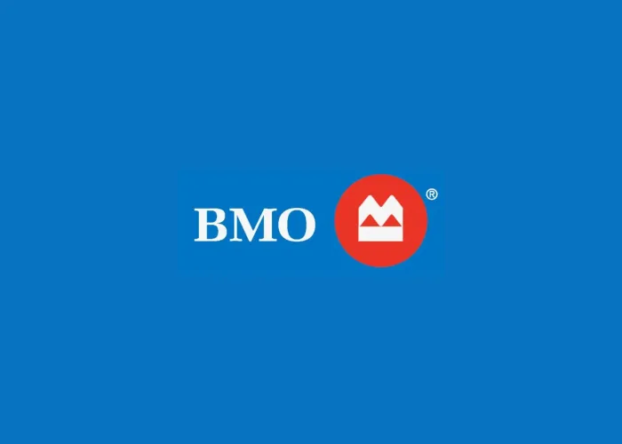
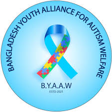
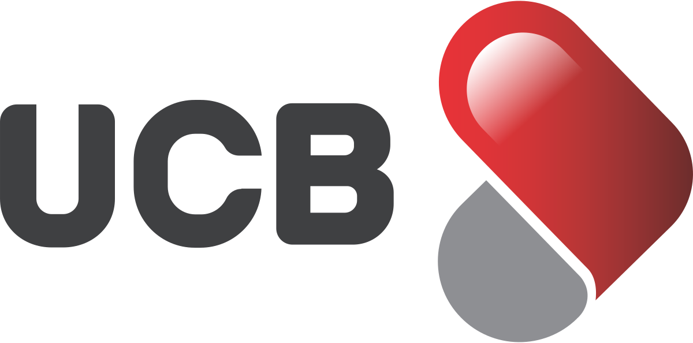
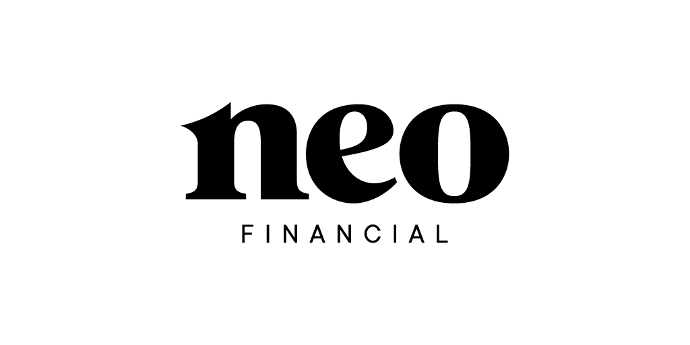

Software Engineering AI & Systems Public Health Lens
Computer science student building software across AI, systems, data, and product experiences — with public health and advocacy as the human-impact side of my work.
Hi, I'm Junayed
I turn research, advocacy, and lived experience into meaningful public health and social impact — from Bangladesh to Canada.
Affiliated With
To use research, advocacy, and technology to improve health systems, support vulnerable communities, and promote inclusion for children and families affected by autism and other public health challenges.
Born and raised in Bangladesh, where a deep connection to community and a passion for health equity first took shape.
OriginEstablished Bangladesh Youth Alliance for Autism Welfare — a youth-led initiative dedicated to autism awareness, family support, and inclusion advocacy.
AdvocacyBuilt BYAAW's community to 1,000+ members — running awareness programs in schools, organizing events, fundraising, and expanding advocacy reach across Bangladesh and beyond.
AdvocacyMoved to Edmonton, Alberta to pursue higher education at the University of Alberta, bringing a global public health perspective to new opportunities.
EducationSoftware Developer Intern at UCB, Sales Rep at Neo Financial, campus ambassador at Wizeprep — and 11 projects spanning AI, systems programming, public health, and advocacy.
WorkAspiring to shape global health policy, advance evidence-based public health systems, and create lasting social impact across communities worldwide.
VisionBiological, chemical, and physical environmental factors and their impact on community health — including risk assessment, prevention strategies, and case studies across developed and developing country contexts.
SPH CourseworkHow climate hazards — heat mortality, vector-borne and waterborne disease, malnutrition, mental health disruption — shape population health risk. Applied vulnerability assessment, health equity frameworks, and community adaptation strategies.
SPH 456 · CourseworkEpidemiologic principles applied to the determinants of health and disease in populations — disease outbreak investigation, epidemic and pandemic analysis, and health promotion strategies across diverse communities.
SPH CourseworkHow globalization shapes health disparities, access to care, and disease burden across borders — examining multifactorial interventions, health equity, and sustainable solutions in an interconnected global health system.
SPH CourseworkFounded BYAAW and led evidence-based awareness programs, podcast-style specialist sessions, and family support initiatives for communities affected by autism across Bangladesh.
Applied Work View Project ↗Evidence-based policy analysis and infographic on radon risk in Alberta homes — proposing a provincial Radon Mitigation Disclosure Program with mandatory testing, subsidized kits, and public education through Alberta Health Services.
Applied Work View Project ↗I started BYAAW because I watched families in Bangladesh navigate autism alone — no resources, no community, no one to tell them their child's future could still be full. BYAAW exists to change that reality, one family at a time.
Every child with autism in Bangladesh deserves to be seen. That belief started BYAAW — and it still drives everything we do. — Junayed Ahmed, Founder
From Dhaka to Edmonton — BYAAW has grown from a personal mission into a movement with global reach and UNYSA-affiliated advocacy.
Advocacy campaign and podcast-style sessions with specialists, community changemakers, and Q&A discussions to educate the public on autism in Bangladesh.
Public health infographic proposing a provincial radon mitigation policy — backed by data on lung cancer risk, WHO exceedance rates, and an evidence-based disclosure program.
Philosophy essay comparing theistic and atheistic moral frameworks — examining Divine Command Theory, secular humanism, and the Euthyphro dilemma through a comparative and truth lens.
AI-powered voice assistant handling inbound banking calls with intent routing and safety-first action policies via FastAPI and Twilio.
Full-featured Twitter-like CLI app in Python + SQLite — authentication, hashtags, followers, retweets, feeds, and injection-safe queries.
MongoDB aggregation pipelines surfacing product quality signals, reviewer behaviour, time trends, and suspicious review detection at scale.
Android app with role-based access for entrants, organizers, and admins — lottery-based selection backed by Firebase real-time sync.
AI agent playing a strategy game using heuristic evaluation and UCB-style exploration-exploitation to outperform greedy and random baselines.
SARSA, Q-learning, Expected SARSA, and Dyna-Q+ implemented from scratch and compared empirically across environments including Mountain Car.
Console Minesweeper in C using exclusively pointer arithmetic — zero array subscripts anywhere in the grid logic.
Ray tracer in C computing ray-sphere intersections and lighting from vector math alone — output rendered to PPM image format.

BMO Bank of Montreal
Delivering high-quality banking service, recommending financial products, and guiding clients through digital platforms at one of Canada's largest banks.

Bangladesh Youth Alliance for Autism Welfare
Founded and led a youth-driven organization for autism welfare, organizing events, fundraising, and awareness campaigns across Bangladesh.

United Commercial Bank PLC
Worked on enterprise software, secure payment prototypes, and IT infrastructure at one of Bangladesh's leading commercial banks.

Neo Financial
Customer experience and fintech banking solution promotion, combining communication skills with modern financial technology advocacy.
Wizeprep
Campus outreach, class announcements, and student brand communication at the University of Alberta, Edmonton.
Open to the Right Opportunity
Open to software internships, developer roles, AI/data projects, and selective public health or nonprofit collaborations where technology can create practical community impact.
junayed.ah2@gmail.com